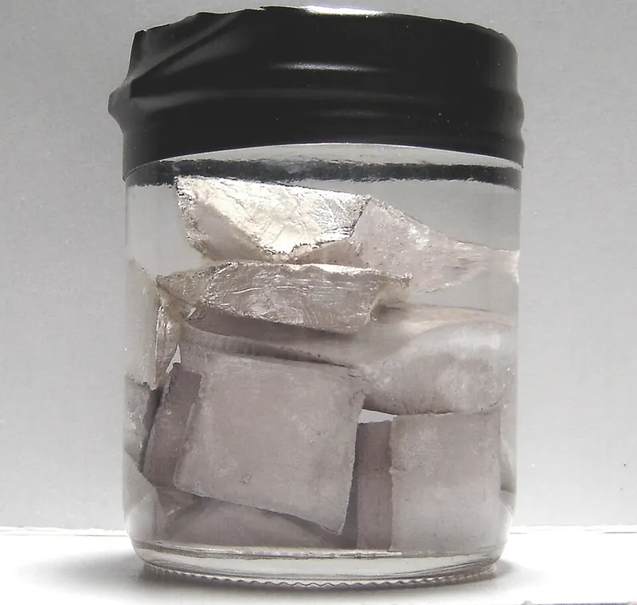
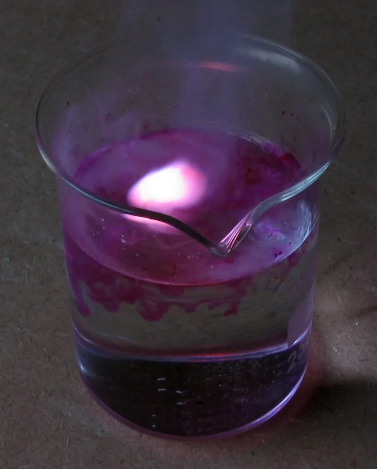
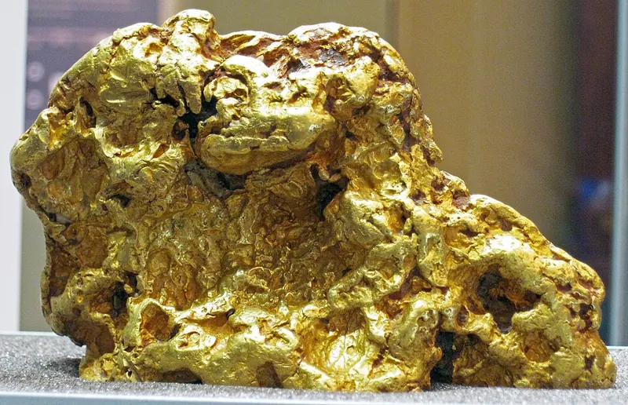

Cambridge Lower Secondary · Science 0893 · Stage 8 · Chemistry
The Reactivity of Metals
The reactivity series of nine metals, how each reacts with oxygen, water and dilute acids, the word equations and the hydrogen test, and why unreactive (inert) substances such as gold are so useful.
British & IGCSE › Checkpoint 8 › Checkpoint 8 Science — Complete Course
- Describe how reactive these metals are with oxygen, water and dilute acids: sodium, potassium, calcium, magnesium, zinc, iron, copper, gold and silver. (8Cc.03)
- Understand that some substances are generally unreactive and can be described as inert. (8Cc.06)
1. Key words
| Word / phrase | Meaning / use |
|---|---|
| reactivity | النشاط الكيميائي — how easily and how fast a substance reacts |
| reactivity series | سلسلة النشاط الكيميائي — a list of metals from most reactive to least reactive |
| vigorous | عنيف — a fast, energetic reaction |
| tarnish | يفقد لمعانه — the surface goes dull as it reacts with air |
| corrode | يتآكل — a metal is slowly 'eaten away' by reacting with air and water |
| hydroxide | هيدروكسيد — the alkaline product of a reactive metal and water |
| salt | ملح — the compound made when a metal reacts with an acid |
| inert | خامل — generally unreactive |
| steam | بخار الماء — water as a hot gas |
2. The reactivity series
Some metals react with almost anything in seconds; others stay shiny for thousands of years. Scientists put metals in order in the reactivity series, with the most reactive at the top. You need to know these nine metals:
Please Send Cats, Monkeys, Zebras In Cages Securely Guarded = Potassium, Sodium, Calcium, Magnesium, Zinc, Iron, Copper, Silver, Gold.
How do we know the order? By comparing how quickly and how vigorously each metal reacts with the same substance. A more reactive metal gives off gas faster, gets hotter, or reacts with a substance that a less reactive metal cannot react with at all.
3. Metals with oxygen
General word equation: metal + oxygen → metal oxide
| Metal | What happens in air or when heated in air |
|---|---|
| potassium | Tarnishes almost instantly in air; burns with a lilac flame. Stored under oil. |
| sodium | Tarnishes quickly in air; burns with a bright yellow-orange flame. Stored under oil. |
| calcium | Burns with an orange-red flame to make white calcium oxide. |
| magnesium | Burns with a very bright white flame, leaving white magnesium oxide. (Do not look straight at the flame.) |
| zinc | Burns when heated strongly as a powder, making zinc oxide. |
| iron | Iron wool or filings burn with sparks in a flame. Iron also rusts slowly in air when water is present. |
| copper | Does not burn. When heated, the surface turns black (copper oxide). |
| silver | Does not react with oxygen, even when heated. |
| gold | No reaction — gold stays shiny for ever. |

4. Metals with water
With cold water: metal + water → metal hydroxide + hydrogen (the solution becomes alkaline). With steam: metal + steam → metal oxide + hydrogen.
| Metal | What happens with water |
|---|---|
| potassium | Very violent: floats, whizzes around, fizzes; the hydrogen catches fire with a lilac flame. |
| sodium | Vigorous: floats, melts into a silvery ball, whizzes around and fizzes; it may catch fire (orange flame). |
| calcium | Steady fizzing; it sinks; the water turns cloudy as calcium hydroxide forms. |
| magnesium | Hardly reacts with cold water (a few bubbles after a long time). Reacts strongly with steam, glowing white. |
| zinc | No reaction with cold water; reacts with steam when heated. |
| iron | No reaction with cold water (but rusts slowly if oxygen is there too); reacts slowly with steam when red hot. |
| copper, silver, gold | No reaction with water or steam. |

Example word equations: sodium + water → sodium hydroxide + hydrogen; magnesium + steam → magnesium oxide + hydrogen.
5. Metals with dilute acids
General word equation: metal + acid → salt + hydrogen. The hydrogen makes bubbles (fizzing). The faster the fizzing, the more reactive the metal.
| Metal | What happens with dilute hydrochloric or sulfuric acid |
|---|---|
| potassium, sodium | Far too violent and dangerous — never done in school. |
| calcium | Very vigorous fizzing. |
| magnesium | Vigorous fizzing; the tube gets warm; the ribbon disappears quickly. |
| zinc | Steady bubbling. |
| iron | Slow bubbling. |
| copper, silver, gold | No reaction. |
Examples: zinc + hydrochloric acid → zinc chloride + hydrogen; iron + sulfuric acid → iron sulfate + hydrogen.
Collect the gas in a test tube and hold a lighted splint at the mouth. Hydrogen burns with a squeaky pop.
كل ما الفلز يكون أعلى في سلسلة النشاط، كل ما يتفاعل أسرع وأعنف مع الأكسجين والماء والأحماض. البوتاسيوم والصوديوم بيتحفظوا تحت الزيت لأنهم بيتفاعلوا مع الهوا والماء بسرعة. النحاس والفضة والذهب ما بيتفاعلوش مع الماء ولا مع الأحماض المخففة. فلز + حمض ← ملح + هيدروجين (والهيدروجين بيعمل فرقعة squeaky pop مع العود المشتعل).
6. Comparing reactivity fairly
To put metals in order yourself, change only the type of metal (independent variable) and observe the rate of bubbling, the volume of gas collected, or the temperature rise (dependent variable). Keep these the same (control variables): the size or mass of the metal pieces, the volume and concentration of the acid, the type of acid, and the starting temperature. Wear eye protection; acids are irritants.
7. Inert substances
Some substances are generally unreactive: they do not react with air, water or most chemicals under normal conditions. We describe them as inert.
- Gold is inert: it does not react with oxygen, water or dilute acids. That is why gold coins and jewellery thousands of years old still shine, why gold is found in the ground as the pure element (not combined with other elements), and why it is used for electrical contacts in phones and computers — it never corrodes.
- Silver is very unreactive too, so it is used for jewellery and coins (it slowly goes dull, but it does not react with oxygen, water or dilute acids).
- The noble gases (helium, neon, argon) are inert. Argon fills some light bulbs so the hot filament does not react; helium fills balloons and airships because, unlike hydrogen, it cannot burn.
- Glass is inert to most chemicals, which is why test tubes and beakers are made of glass.

Why use inert substances? Something that does not react will not corrode, will not contaminate what it touches, and will not catch fire — so it is safe and long-lasting. The more reactive a metal, the more likely it is found combined in rocks (ores), not as the pure metal.
8. Worked examples
Worked example 1 — Put these metals in order of reactivity, most reactive first: iron, sodium, copper, magnesium. [1]
- Use the series: potassium, sodium, calcium, magnesium, zinc, iron, copper, silver, gold.
- Answer: sodium, magnesium, iron, copper.
Worked example 2 — Complete the word equation: zinc + sulfuric acid → __________ + __________ [2]
- Pattern: metal + acid → salt + hydrogen.
- zinc sulfate (1) + hydrogen (1).
- Common mistake: writing "water" as the second product — water is made with metal oxides, not metals.
Worked example 3 — Describe two observations you would see when a small piece of sodium is added to water. [2]
- Any two: it floats; it fizzes (bubbles of gas); it moves quickly around the surface; it melts into a ball; it gets smaller and disappears; it may burn with an orange flame.
- Exam tip: "observations" means what you see or hear — not "hydrogen is made" (you cannot see that it is hydrogen).
Worked example 4 — A student adds metals to dilute acid and measures the temperature rise. Results: metal A +2 °C, metal B +14 °C, metal C 0 °C, metal D +7 °C. The metals are copper, iron, magnesium and zinc. Identify each metal. [2]
- Bigger temperature rise = more vigorous reaction = more reactive.
- Order: B (14) > D (7) > A (2) > C (0).
- So B = magnesium, D = zinc, A = iron, C = copper (no reaction). (2 marks all correct; 1 mark for two correct.)
Worked example 5 — Explain why magnesium is used in fireworks and flares, but gold is not. [2]
- Magnesium is reactive — it burns in oxygen with a very bright white flame (1).
- Gold is inert — it does not react with oxygen, so it would not burn (1).
Worked example 6 — A metal reacts steadily with cold water and the water turns cloudy. When it is added to dilute acid it fizzes very vigorously. Which metal from the list could it be? Give a reason. [2]
- Calcium (1).
- It reacts with cold water but not violently, and it sinks and makes cloudy calcium hydroxide; sodium and potassium are far more violent, and magnesium hardly reacts with cold water (1).
- Mixing up the order of magnesium and zinc, or copper and iron. Learn the mnemonic.
- Saying copper reacts with dilute acid — it does not.
- Writing "metal + acid → salt + water". With a metal the second product is hydrogen.
- Saying "inert means it does not exist" or "has no mass". Inert = unreactive.
- Giving the result instead of an observation: write "it fizzes" (seen), not "it makes hydrogen".
- Thinking all metals react with cold water. Only potassium, sodium and calcium react well; magnesium only very slowly.
- Put metals in order from observations (bubbles, temperature rise, results tables).
- Predict how an unfamiliar or a listed metal will react from its place in the series.
- Describe observations for sodium, potassium or calcium with water, or magnesium burning.
- Complete word equations: metal + oxygen, metal + water, metal + acid.
- Identify the gas and describe the test (squeaky pop).
- Plan a fair test comparing metals: control variables, what to measure, safety.
- Explain uses of gold, silver and argon using the word inert.
Practice
- Reactivity series: potassium, sodium, calcium, magnesium, zinc, iron, copper, silver, gold.
- metal + oxygen → metal oxide; metal + water → metal hydroxide + hydrogen; metal + acid → salt + hydrogen.
- Potassium, sodium and calcium react with cold water; magnesium, zinc and iron react with steam; copper, silver and gold do not react with water or dilute acids.
- Hydrogen gives a squeaky pop with a lighted splint.
- Inert = generally unreactive (gold, the noble gases): used where something must not corrode, burn or react.
All pages in this course
Start here
- Stage 8 Science: The Tests and How to Prepare
- Thinking and Working Scientifically: Models, Investigations and Analysing Results
Biology
- Joints and Antagonistic Muscles
- Blood and Its Components
- Breathing, Gas Exchange and Diffusion in the Lungs
- A Balanced Diet, Energy Stores and Lifestyle
- Aerobic Respiration
- Ecosystems, Bioaccumulation and Invasive Species
Chemistry
- The Structure of the Atom
- Purity, Concentration and Chromatography
- Word Equations, Exothermic and Endothermic Reactions
- The Reactivity of Metals
- Impure Products and Solubility of Salts
Physics
- Speed and Distance–Time Graphs
- Balanced and Unbalanced Forces, and Moments
- Pressure, Particles and Diffusion
- Reflection and Refraction
- Dispersion and Colour
- Magnetic Fields and Electromagnets
Earth and space
- The Earth's Magnetic Field and Earth's Resources
- Climate, Weather and Climate Change
- Galaxies and Asteroids
Practice tests